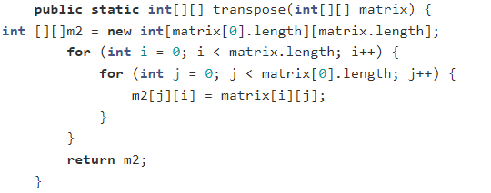

Phone: +375 29 345 45 56
Was born in 2002, in Vitebsk region, Belarus. Currently getting a Bachelor Degree at FAMCS BSU.
Love cats.
Transpose the matrix:
Find these lines' intersection:
Please, implement the method intersection(Line) in class Line.
It must return a Point of intersection of two lines.
Note that lines are defined by linear equations: y = k*x + b.
Line constructor takes k and b coefficients as parameters.
If lines coincide or do not intersect, the method must return null.
It may seem surprising that we use int for arguments and fields of coordinates.
The point is that using double will bring some extra complexity we want to avoid for this
basic exercise.
All tests are selected in to induce calculations without remainders.